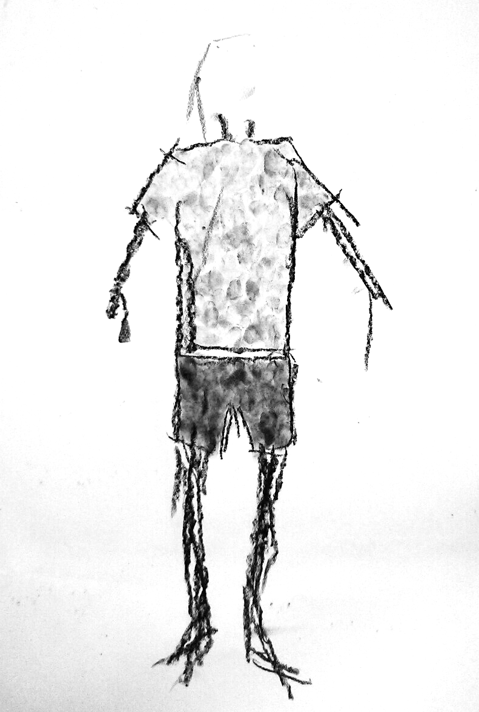
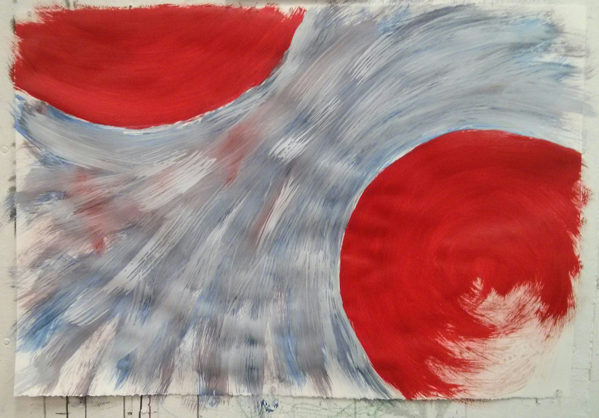
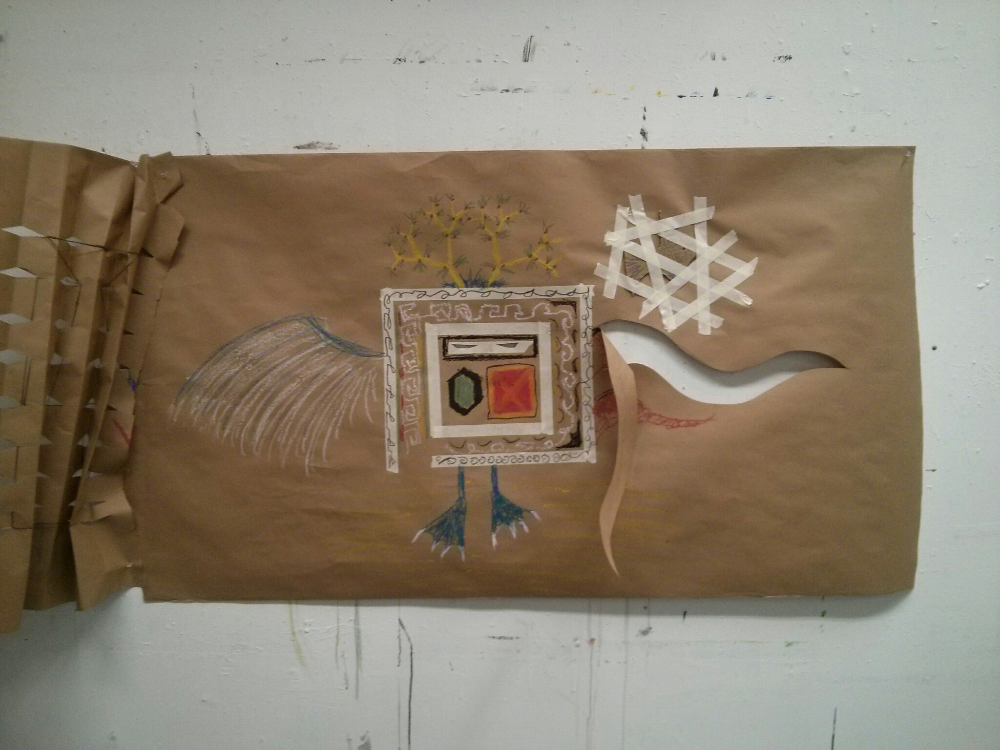

"Art as a process [...] focuses on experimentation and the creative process rather than a pre-imagined or calculated end product"
The task for this image was to draw a representation of how you see yourself.

"Fill the page with your name."
